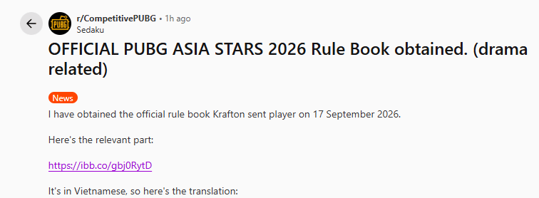
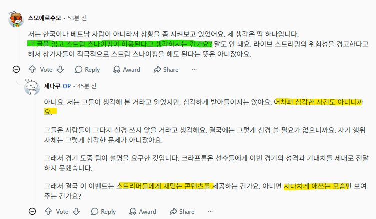
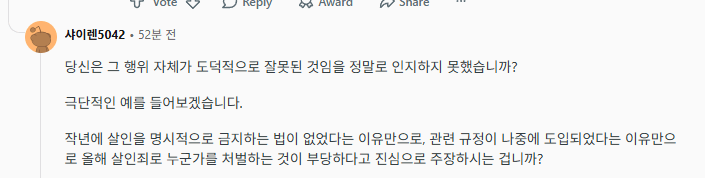
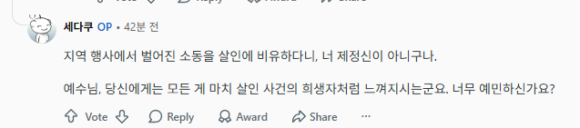

레딧에 베트남 유저로 추정되는 인물이 올린 글을 보자
(사실 레딧 뿐 아니라 베트남쪽 디코나 페북쪽도 다 이걸 주력논조로 밀고 있음)
근거가 바로 무려 룰북이다
대회 시작 전, 참가자들에게 배부된 룰북 3.7조에 따르면
스트리머들은, 부정행위 방지를 위해 자신에 방송에 딜레이를 적용해야 하며
딜레이를 걸지 않아 발생하는 문제는 전적으로 스트리머 본인의 책임이다
라 기재되어 있다.
즉... 방플을 쓰지 않고 선량하게 게임을 한
나머지 스트리머들이 딜레이를 걸지 않은게 잘못이고
이를 적극 활용해 스트림 스나이핑(방플)을 한 히마스와 탄부는 잘못이 없다... 라는 거다
아무튼 그래서 다른 레딧 유저들의 반응과, 그에 대한 대답을 살펴보자

Q: 저기 안적혀있다 해도 경쟁전에 프로가 방플해도 됨?
A: 심각한 사건이 아닌데 왜 진지해??


Q: 너 그럼 살인하지 말라는 법 없으면 사람 죽일꺼?
A: 어머 너 너무 극단적이야
그만 알아보자...
마지막 3줄 요약
1. 3.7조에 딜레이 걸라고 했는데 안건 스트리머들이 잘못이고, 그걸 영리하게 이용한 비-엣남 전사들은 잘못한게 없다고 주장중
2. 걍 대화 하려고 하는 우리가 잘못인듯
3. 크래프톤 병신련들
한자쓰고 유교권이니까 같은 동아시아라고 염병을 떨더만